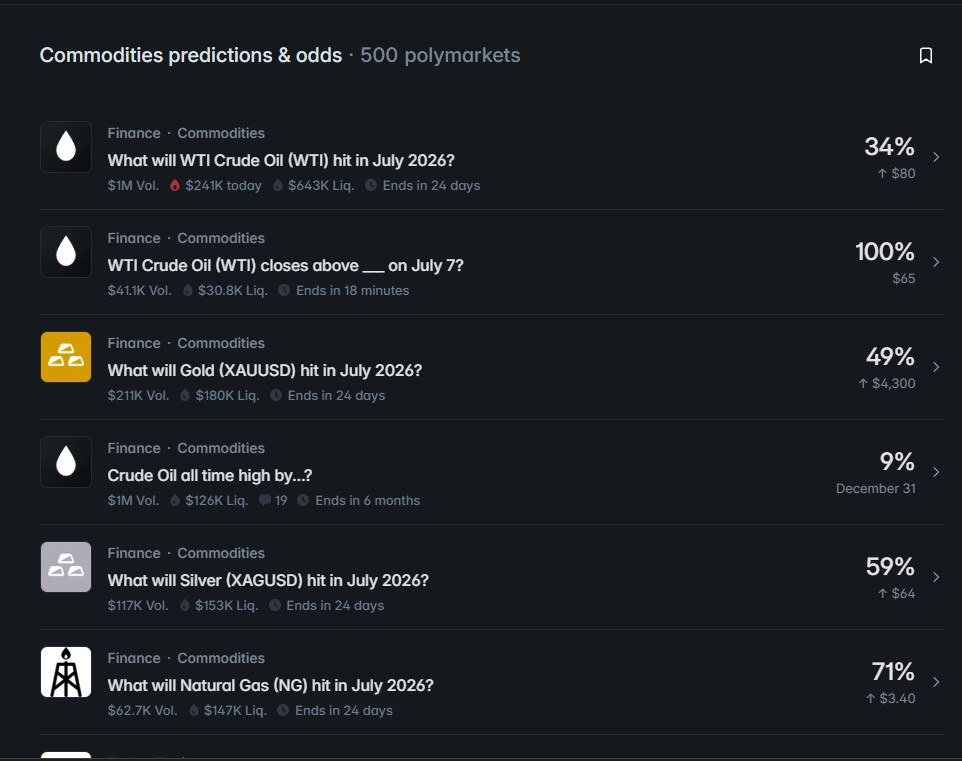

Trade Commodities on Polymarket: Gold, Oil, Silver & Natural Gas Without a Futures Account

A lot of traders never touch commodities because the on-ramp is annoying. A futures account means margin requirements, contract specs, overnight fees, and a broker that wants to know you understand leverage before they'll let you near crude oil. An options account means an approval tier, and depending on your broker, a waiting period. For most people, that's enough friction to just never bother — even if they have a strong view on where oil, gold, silver, or natural gas is headed.
Polymarket sidesteps most of that. You're not opening a futures position or buying a listed option contract, but the commodity markets on the platform are structured close enough to options — a price target, a maturity date, a binary or range-based payout — that the underlying skill of "having a view and expressing it" transfers directly.
How these markets are actually structured
Every commodity market on Polymarket boils down to a question with a deadline: will the price of X hit a certain level, or land in a certain range, by a certain date. That's the same skeleton as an option — a strike, an expiration, and a settlement rule — just simplified into a yes/no or multiple-choice format instead of a continuous payoff curve.
A few structures show up repeatedly:
Monthly range markets. "What will WTI Crude Oil (WTI) hit in July 2026?" breaks the month into price buckets and asks which one the price lands in by the end of the period. This is the closest thing to a strip of out-of-the-money options across a range of strikes, collapsed into one market.
Daily close markets. "WTI Crude Oil (WTI) closes above ___ on July 7?" is a same-day expiry — a single strike, resolving at that day's close. Short-dated, high-turnover, and the fastest way to see how a market reprices as new information comes in.
Milestone markets. "Crude Oil all-time high by...?" is a longer-dated, single binary outcome — closer in spirit to a far-out-of-the-money option than a range bet.
In every case, the mechanics are the same: you're buying a position at a price between $0.01 and $0.99 representing the market's implied probability, and it settles at $1 or $0 when the market resolves. There's no margin call, no assignment risk, and your maximum loss is capped at what you put in — you can't lose more than your position size, which isn't true of every options strategy.
What's available right now
The commodity board currently covers the major benchmarks traders actually watch:
WTI Crude Oil is the flagship market on the board, and it's not close — it consistently pulls the most volume and the deepest liquidity of the group, with both monthly range markets and same-day close markets running in parallel. If you're only going to learn one commodity market on the platform, this is the one, because it's the one where you'll actually be able to size a position without moving the price yourself.
Gold (XAUUSD) and Silver (XAGUSD) run the same monthly-range format, useful for traders who want metals exposure without opening a separate account for precious metals futures.
Natural Gas (NG) rounds out the board — thinner than crude, but still liquid enough to trade a directional view, particularly around seasonal demand swings.
Volume and liquidity move around, so it's worth actually checking the numbers before sizing a position rather than assuming last month's depth still applies.
Where this is genuinely different from options
It's worth being honest about where the comparison breaks down, because treating these as identical to listed options will get you into trouble.
No continuous payoff. A real option's value moves smoothly with the underlying and with implied volatility. A Polymarket position moves with the crowd's changing estimate of probability — which correlates with the underlying price, but isn't a direct function of it. Two markets can have the same "strike" and behave very differently depending on how much attention and liquidity they're getting.
Resolution source matters. Read exactly what price feed or benchmark a market resolves against before you trade it. A market that looks like a clean bet on the spot price can have resolution criteria with edge cases, the same way a political market's fine print can turn what looked like a sure thing into a loss.
Liquidity isn't guaranteed. Thinner markets can have wide spreads, meaning the price you can actually trade at is worse than the price on the screen. This is the same slippage problem options traders deal with in illiquid strikes, just less visible until you try to size up.
You're trading other people, not a market maker with an obligation to quote. It's zero-sum. Every dollar you make on a mispriced move is a dollar someone else's position lost. That changes how you should think about position size and about which markets you're actually good at reading.
A reasonable way to start
Start with WTI, since it's the deepest market and the one where you'll get the most reliable read on how price relates to the news driving it. Watch a few resolution cycles before putting on size — see how the range markets behave as the month progresses and how the daily close markets react to inventory data, OPEC headlines, or macro releases you'd already be tracking if you followed oil at all.
Treat the maturity date the way you'd treat an expiration date on an option: know it, and don't let a position drift toward it assuming you can exit whenever you want. As a market approaches resolution, liquidity can dry up exactly when you'd want to adjust.
The takeaway
You don't need a futures account or an options approval tier to have a view on oil, gold, silver, or natural gas. Polymarket's commodity markets give you a strike, a maturity, and a capped-risk position — the same basic shape as an option, wrapped in a simpler interface. The tradeoff is that you're trading against other people's probability estimates rather than a continuously priced instrument, so the read you need is slightly different even when the underlying question is the same one a commodities desk would ask.
Disclaimer: This post is educational and describes how these markets are structured. It is not financial advice. Prediction markets carry real financial risk, including the risk of total loss on any given position, and commodity prices can be volatile. Always check a market's exact resolution source and rules before trading, and only risk what you can afford to lose.